Methoden-Modul
MScUmwelt und NatürlicheRessourcen
Spatial Data Science 1

Patrick Laube, Nils Ratnaweera & Nikos Bakogiannis
Geoinformatics Research Group
Institute of Natural Resource Sciences
ZHAW Zurich University of Applied Sciences Grüental, Postfach, CH-8820 Wädenswil
{laup, rata, bako}@zhaw.ch
Screencast
Teil 1
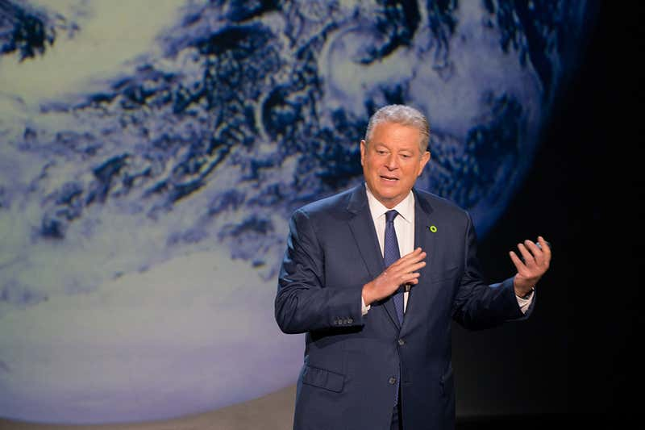
“80% of all data is georeferenced
- t hat is, it refers to some specific place on the Earth’s surface .”
Al Gore, TheDigital Earth: Understanding our planet in the 21stCentury, 1998
Zitat Al Gore: «80% aller Information ist räumlich»
Bildquelle: https://images.newscientist.com/wp-content/uploads/2017/08/11160128/ac28y703-2-800x533.jpg
{kind=link}
Analyzing and modelling animal-vehicle collision hot-spots for the Swiss road network
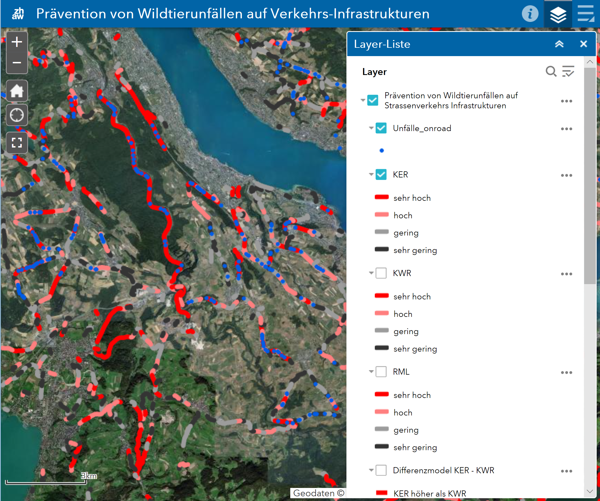
FG Wildtiermanagement
StefanM. Suter, Martina Reifler-Bächtiger, Tanja Koch,AnnetteStephani, Benjamin Sigrist, Roland F.Graf
FG Geoinformatik
PatrickLaube, NilsRatnaweera
Inst . für Angew . Simulation IAS
IvoKaelin, AnnaWróbel
Lernziele

Sie können in eigenen Worten und anhand selbst gewählter Beispiele unter der Verwendung von Fachsprache erklären, inwiefern sich räumliche Daten von nicht-räumlichen Daten unterscheiden und welche Implikationen diese Unterschiede für die Datenverarbeitung haben.
Sie kennen die grundlegenden konzeptuellen Datenmodelle und Datenstrukturen für Geodaten .
Sie sind in der Lage eigene, nicht-räumliche Punktdaten durch die Verwendung von Spatial Joins und Pufferoperationen mit räumlicher Information anzureichern.
Sie sind vertraut mit der Aggregationseigenschaft von räumlicher Information, können diese anhand des Modifiable Areal Unit Problems (MAUP) mit Fachsprache beschreiben und kennen methodische Herangehensweisen zum Umgang mit dem MAUP.
und all das machen wir mit R (und nicht mit GIS)!
Programm
“What is special about spatial?”
DasganzkleineGeodatenEinmaleins
RäumlicheAnnotation vonPunktdaten(Spatial Join)
NachbarschaftundNähe(Puffer)
RäumlicheAggregation (MAUP)
Zitat Al Gore: «80% aller Information ist räumlich»
“A newwave of technological innovation is allowing us to capture, store, process and display an unprecedented amount of information about our planet and a wide variety of environmental and cultural phenomena. Much of this informationwillbe”georeferenced" - that is, it will refer to some specific place on the Earth’s surface.” (The Digital Earth: Understanding our planet in the 21stCentury, 1998)
einigeQuellenweisendas 80%-ZitatAl Gorezu…
Bildquelle: https://images.newscientist.com/wp-content/uploads/2017/08/11160128/ac28y703-2-800x533.jpg
Wissenschaftliche Studie zur Frage
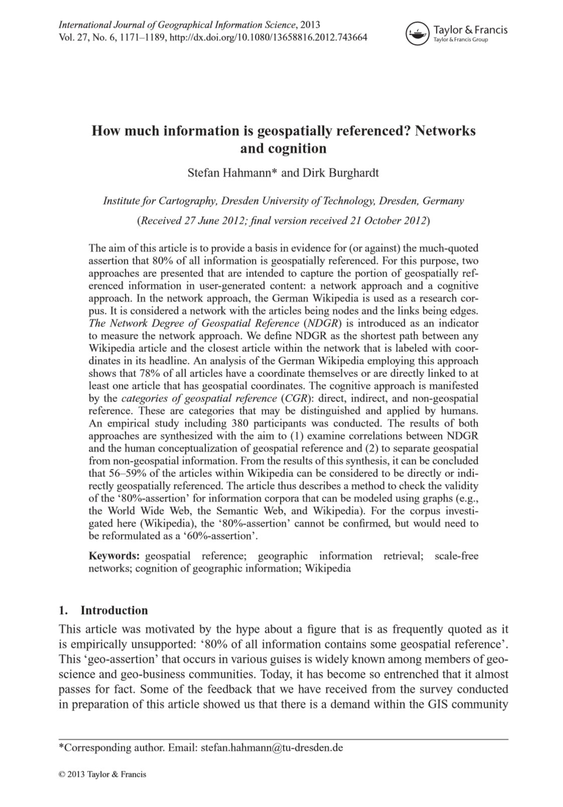
“Ananalysis of the1.3 Mio German Wikipedia articles showsthat 78% of all articles have a coordinate themselves or are directly linked toat leastone article that has geospatialcoordinates” (Hanmann&Burghardt2013)
Hahmann, S., &Burghardt, D. (2013). How much information is geospatiallyreferenced?
Networksand cognition. International Journal of Geographical Information Science , 27(6), 1171-1189.
Frage: Was ist speziell an räumlichen Daten?
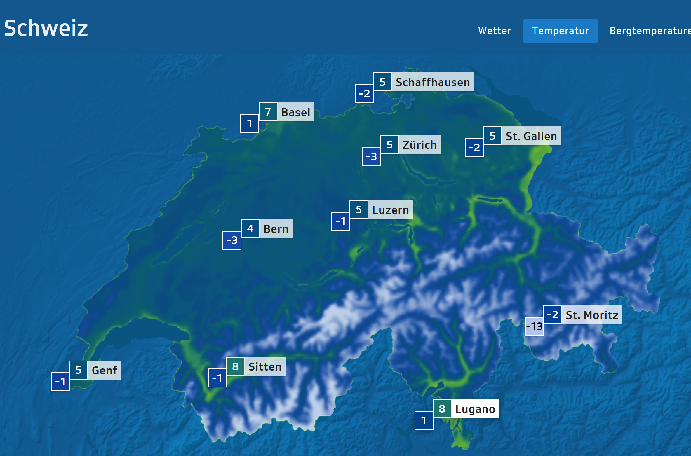
Wasmeinst Du,weshalb sagen wir räumliche Information ist speziell?
Notiere Dir einigeStichworte, weshalb räumliche Information speziell sein soll.
min.
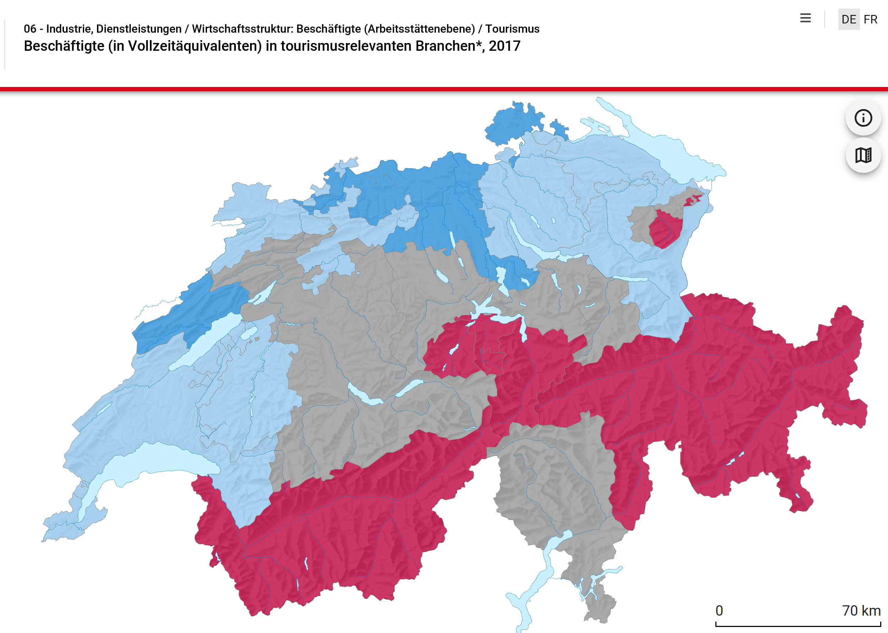
Bildquellen: https://www.srf.ch/meteo, https://www.bfs.admin.ch
Eigenschaften von räumlichen Daten
- Lageinformation
- Absolute Lage (x,y,z), Koordinatensysteme
- Relative Lage (Dinge zueinander), Nachbarschaft, Topologie
- Zeitinformation
- Absolute Zeit (Wann sind Daten gültig? Wann wurden Daten erhoben?)
- Relative Zeit (gerade inUmweltwiss. ist Veränderung zentral)
- Euer Vorteil: mit Zeiten rechnen in R könnt ihr schon!
- Grundannahme der Unabhängigkeit von Stichproben gilt nicht!
- Geodatensind räumlich und oft zeitlich (auto-)korreliert
- Geostatistik bietet Analysemethoden, welche diese Abhängigkeiten berücksichtigen
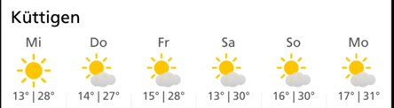


Spatial is special: Massstabsabhängigkeit
Fast alle räumlichen Daten müssen mit einem Raumbezug/Massstab gemacht werden(Einw/km2,Einwpro Gemeinde/Kanton)
Daten verändern sich mit dem Massstab (Bild)
Bsp. Je nach Auflösung der Drohnenbilder (cm vs. m) verändern sich die ökologischen Indikatoren Uferlänge oder Anzahl_Inseln .
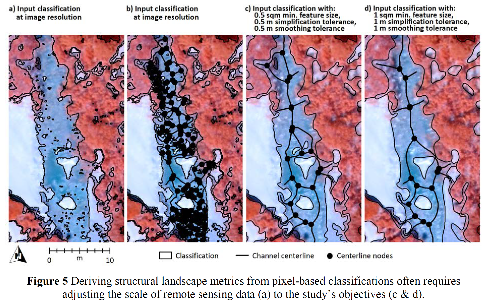
Geilhausen, M., Laube, P., Ochsner, P.
andDoering, M.(2016).A Matchmade
inHeaven – A Hands-On GISPipeline
unlocksthe Potential of BudgetRemote
Sensing. In Proceedings of the 24th GIS
Research UK Annual Conference ,
GISRUK16 , University ofGreenwich,
30thMarch to 1st April 2016, London, UK.
Spatial is special: Aggregationsabhängigkeit

Die Wahl der Aggregationsebene verändert die Daten und damit die räumlichen Muster
Bsp. hierZonierung in Kantone oder kleinereArbeitsmarktregionen
sog. M odifiable A real U nit P roblem (MAUP)
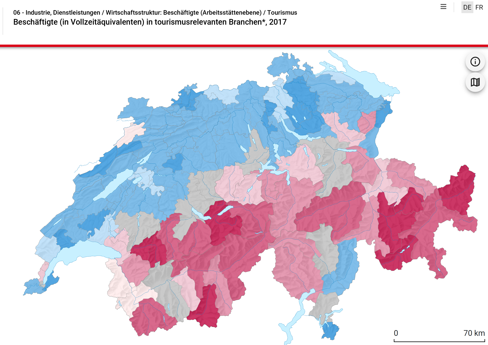
Bildquelle: https://www.bfs.admin.ch
Spatial is special: Nachbarschaftsabhängigkeit
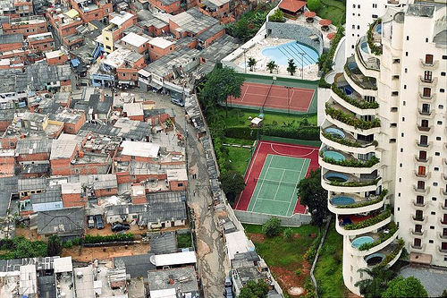
- Räumlich Phänomene zeigen oft gleichzeitig
- Räumliche Autokorrelation: Was nahe ist hat sehr ähnliche Werte
- Räumliche Heterogenität: Grosse Unterschiede auf kleinstem Raum
Bildquellen: https://www.bfs.admin.ch, https://mindblog.dericbownds.net/2007/10/rich-and-poor.html
Special is Special
- Grundannahme der Statistik (Daten/Stichproben sind unabhängig ) gilt bei räumlichen Daten nicht!
- Räumliche Daten zeigen
- Massstabsabhängigkeit
- Aggregationsabhängigkeit
- Nachbarschaftsabhängigkeit
- Räumliche Autokorrelation
- Räumliche Heterogenität
- Technische Herausforderung: Umgang mit Geodaten ist schwieriger
- d afür riesiges Potenzial für besseres Verständnis unsere natürlichen/gebauten Umwelt, wichtig für Umweltwissenschaften
- wir brauchen spezielle Methoden und Werkzeuge, um mit räumlichen Daten umgehen zu können
- Geographische Informationssysteme GIS (nicht in diesem Kurs, aber sehr spannend)
- Spezielle Werkzeuge in R, aufbauend auf was Ihr schon könnt
Programm
“What is special about spatial?”
Das ganz kleine Geodaten Einmaleins 1x1
RäumlicheAnnotation vonPunktdaten(Spatial Join)
NachbarschaftundNähe(Puffer)
RäumlicheAggregation (MAUP)
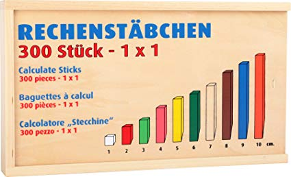
Für eine Geodatenanalyse brauche ich…(GIS 101)
- Ein Modell zur Abbildung der Umwelt
- Konzeptionelle Datenmodelle
- Entitäten (entities)oder Felder (fields)
- Datenstrukturen zur Speicherung der Lage und Attribute
- Vektor (Punkte, Linien, Polygone) oder Raster
- vgl. zu den R Datentypencharacter,numeric,vector, nur halt fürGeodatenmit Geometrie/Lageinformation
- mit einem Koordinatensystemen (WGS84, CH1903+ LV95)
- Räumliche Beziehungen für die Analyse
- Geometrie (x,y,z),
- Topologie (räumliche Beziehungen zwischen Objekten)
1. Konzeptionelle Raummodelle
Geodatenmüssenin irgendeiner Form Attribute (die Semantik 1 ) und räumliche Information über die zu beschreibenden Dinge berücksichtigen, …
…mit anderen Worten, das “was” und “wo” abdecken
sowohlAttribute als auch Lageinformation können auf unterschiedliche Art und Weise beschriebenwerden
Kt. GR
Fläche: 7105 km²
Einw. 198000
#Besch. Tour. 12360
- Entitäts-Modell (engl. entities ): Der Raum ist bevölkert mit diskreten Objekten mit einer Lage und Attributen ( Entitäten oder Objekte)
- Feld-Modell (engl. fields ): Die zu untersuchende räumliche Eigenheit hat eine kontinuierliche räumliche Existenz, d.h. jeder Punkt im Raum hat einen Wert
Semantik(vonaltgriechischσημαίνειν sēmaínein „bezeichnen“): allg.Lehrevon
BedeutungderZeichen, inGISderBedeutungszusammenhangdessenwasmodelliertwird
2. Datenstrukturen: Vektor oder Raster?

Konzeptionelles Datenmodell
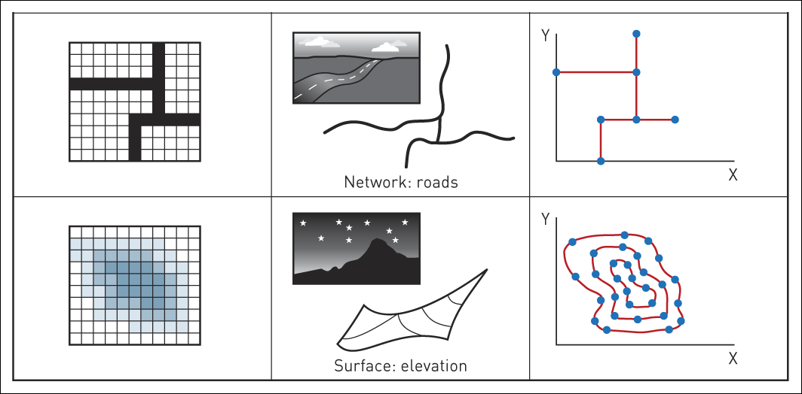
Vektor-Datenstruktur

Bildquelle: Heywood, I. et al. (2006). An Introduction to Geographical Information Systems, Pearson.
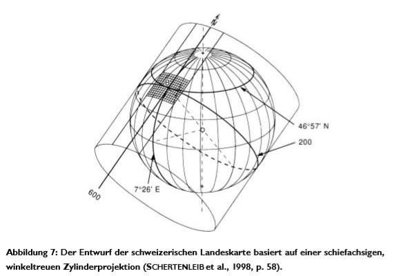
Koordinatensysteme
Karthesische
Koordinatensysteme
Geodätische
Koordinatensysteme
MitProjektion
X- und Y-Achse rechtwinklig,planar(daherkarthesisch)
CH1903 LV03altes SchweizerLandeskoordinatensyst(03 steht für 1903!)
CH1903+ LV95neues Schweizer Landeskoordinatensystem (seit 2017)
globale Koordinatensysteme in Länge und Breite
Lat/Lon
nicht rechtwinklig
z.B.WGS84(WorldGeodeticSystem)
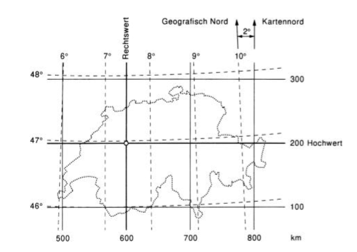
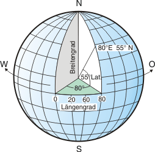
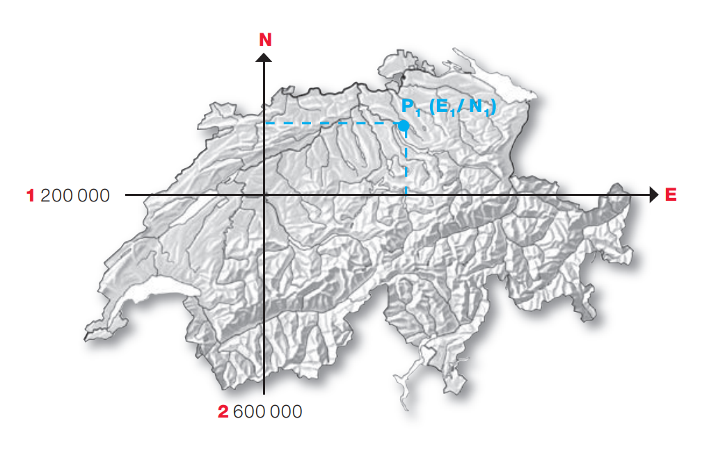
https://www.ibm.com/support/knowledgecenter
https://www.swisstopo.admin.ch/de/wissen-fakten/geodaesie-vermessung
SCHERTENLEIB, M. H., BURRI K., ROHR U., 1998: Geografie II, Lektion 2, Inhalt: Kartografie, AKAD Verlag, Zürich, Stuttgart
Zusammenfassung
Räumliche Daten sind speziell weil sie massstabsabhängig (Notwenigkeit der Angabe eines Massstabs), aggregationsabhängig (Variation der Daten je nach Aggregation/Zonierung) und nachbarschaftsabhängig sind (räumliche Abhängigkeit neben räumlicher Heterogenität).
Die Grundannahmeder Unabhängigkeit von Stichproben giltnicht für räumliche Daten, deshalb braucht es eigene Methoden für die Raumanalyse.
Diezwei gebräuchlichsten konzeptuellen Datenmodelle für räumliche Phänomene sind Entitäten (diskrete Objekte) und Felder (kontinuierlich).
Entitätenund Felder werden in GIS meist mit den Datenstrukturen Vektor(für Entitäten) und Raster (für Felder)repräsentiert
Methoden-Modul
MScUmwelt und NatürlicheRessourcen
Screencast
Teil 2
Spatial Data Science 1
Patrick Laube, Nils Ratnaweera & Nikos Bakogiannis
Geoinformatics Research Group
Institute of Natural Resource Sciences
ZHAW Zurich University of Applied Sciences Grüental, Postfach, CH-8820 Wädenswil
{laup, rata, bako}@zhaw.ch
Programm
“What is special about spatial?”
DasganzkleineGeodatenEinmaleins
Räumliche Annotation von Punktdaten (Spatial Join)
NachbarschaftundNähe(Puffer)
RäumlicheAggregation (MAUP)
Convenience Variablen

Frage: Räumliche Einbettung der Sensoren?

Überlege Dir,wie wir solche Sensoren räumlich einbetten könnten?
Wie könnten wir die Tabelle mit zusätzlichen räumlichen Attributen erweitern?
min


Räumliche Variablen: Attribut-Join


Sensoren Lage-Code
(räuml. Attribut)
- 10=tief
- 20=hoch
Joinmit Tabelle Gelände
Sensoren Lage-Code
(räuml. Attribut)
- 10=tief
- 20=hoch
Joinmit Tabelle Gelände
group_by()
summarize()

Räumliche Variablen: Spatial-Join
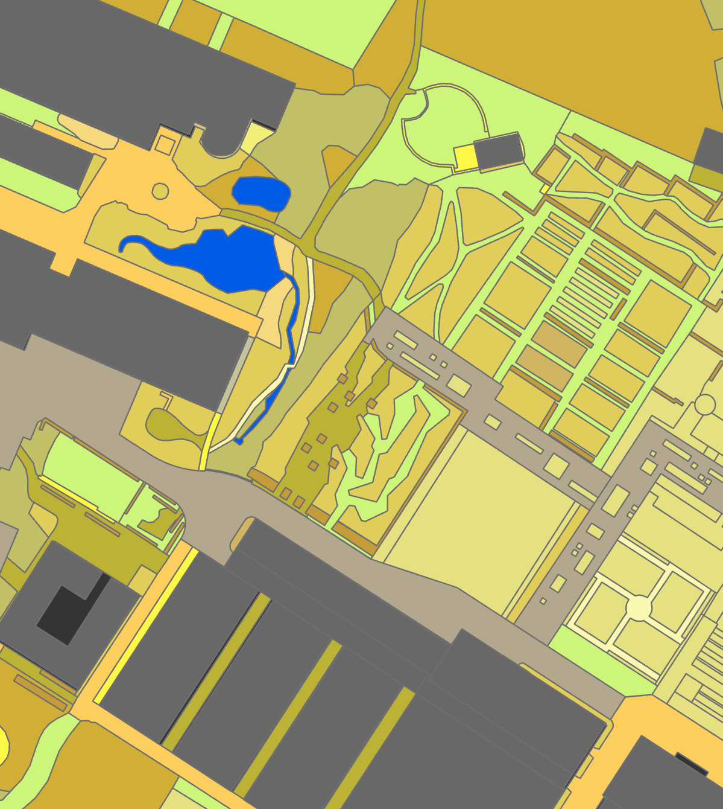
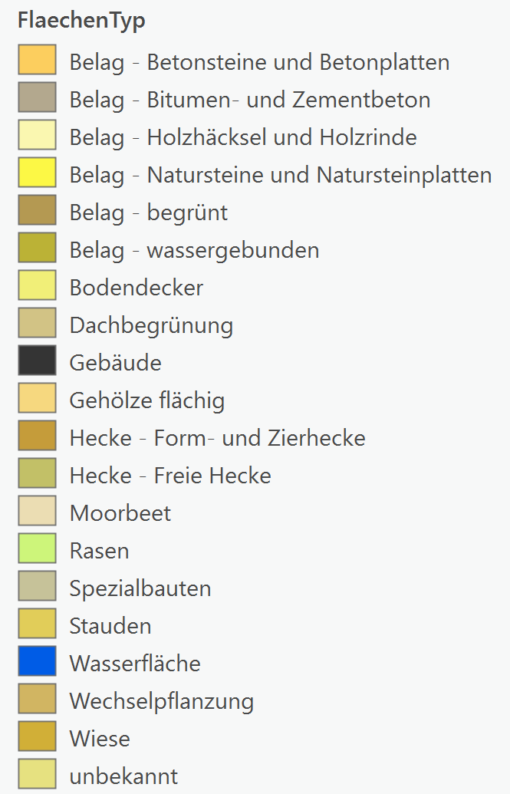

SenKontext<-st_join(sensoren,flaechentyp)
3. Räumliche Beziehungen: Topologie
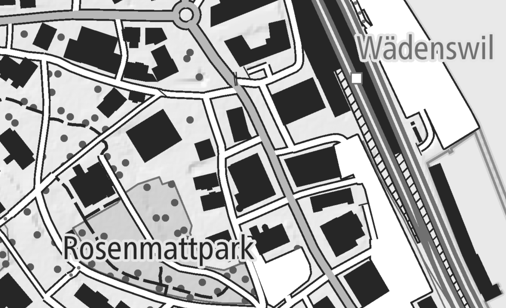
- Topologische Beziehungen beschreiben dierelativenräumlichen Beziehungen von Objekten zueinander, wobei von der Geometrie abstrahiert wird. Somit ergänzt die Topologie die Positionsdaten und Formbeschreibungen aus derGeometriedurch (b)Nachbarschaftsaussagen
- (Bill, 2010)
- Topologie
- overlaps (dt.überlappend)
- touch (dt.berührend)
- contains (dt.enthalten)
- (vgl. spatial join)
- intersects (dt.schneiden)
Point-in-Polygon Test
- Point-in-polygon Test. Bsp. für räumliche Algorithmen
- Wie oft schneidet ein Strahl von Punkt P das Polygon?
- ungerade: drin
- gerade: draussen
- Wie oft schneidet ein Strahl von Punkt P das Polygon?
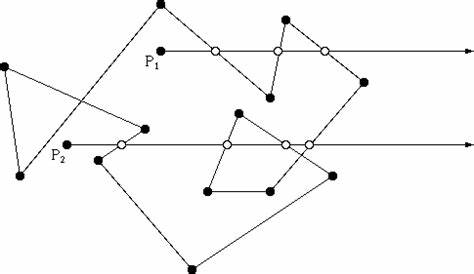
http://idav.ucdavis.edu/~okreylos/TAship/Spring2000/PointInPolygon.html
Topologie für Konnektivität
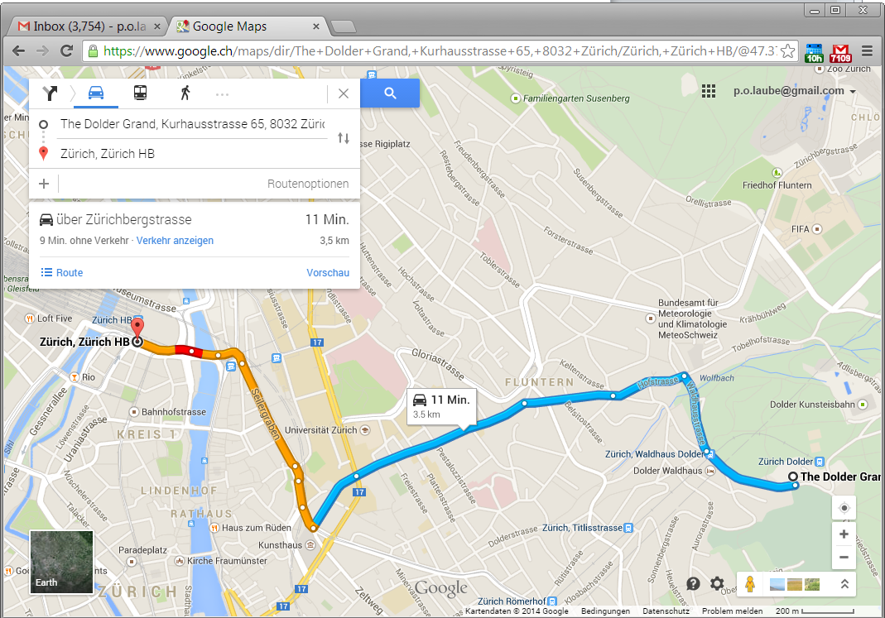
- WasistübereinNetzwerkmitwasverbunden?
- KürzesterPfadvon AnachB?
- WasserflussdurchsGewässernetz
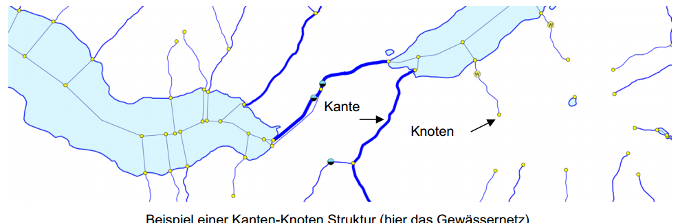
http://www.swisstopo.admin.ch/internet/swisstopo/de/home/products/landscape/vector200.html
Programm
“What is special about spatial?”
DasganzkleineGeodatenEinmaleins
RäumlicheAnnotation vonPunktdaten(Spatial Join)
Nachbarschaft und Nähe (Puffer)
RäumlicheAggregation (MAUP)
Räumliche Analysen mit räumlichen Beziehungen
- «Wädenswil liegt im Kanton Zürich.»
- Spatial join
- topologische Beziehung contains
- «Wädenswil ist ein Nachbarort von Horgen.»
- Nachbarschaftsbeziehung
- topologische Beziehung touch
- «Wädenswil ist in der Nähe von Männedorf.»
- Nähe (engl.proximity)
- Wie modellieren wir «in der Nähe»?
- Puffer
Nähe: Puffer
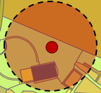
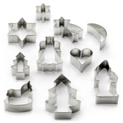
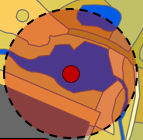
Übungen

SpatialJoinmit Punktdaten zur Wasserverfügbarkeit und Rasterdaten zu Skeletanteil im Boden
Frage: Wieso hat Schweiz so seltsame Form?
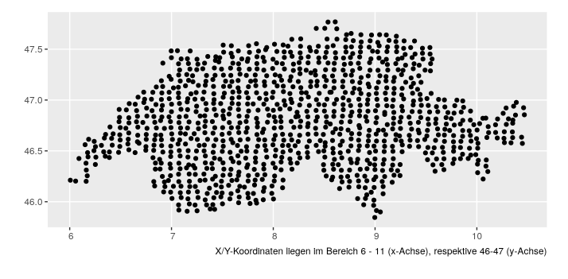
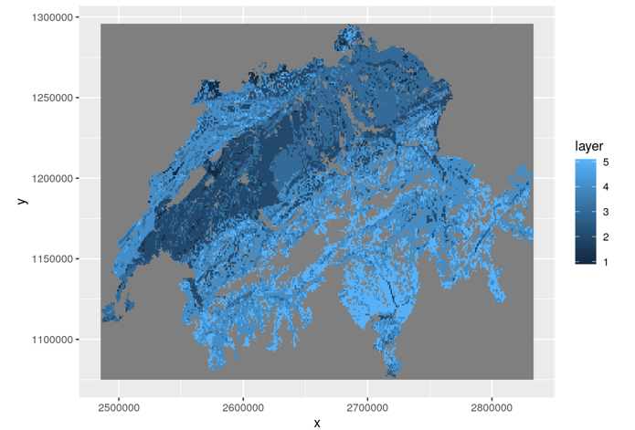
Nähe: Puffertypen
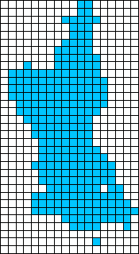
Punkt-Puffer
Linien-Puffer
Flächen-Puffer
hier auf Rasterdaten, nicht Vektordaten
% graue Zellen im Puffer
Puffer-Aufgabe in den Übungen

Sen106 liegt selbst auf der Kategorie «weiss», ist aber zu 85% von «grau» umgeben.
Bestimme im Puffer den häufigsten Zellenwert = Modus (weiss oder grau) in der Nachbarschaft von Sen106
für Sen106 ist Modus grau
Aus unseren Projekten: ASTRA Wildtierunfälle
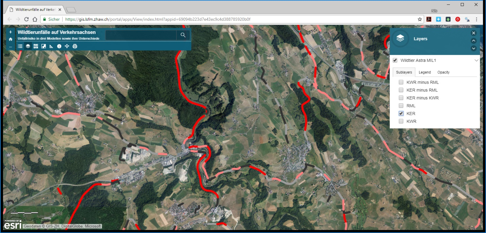
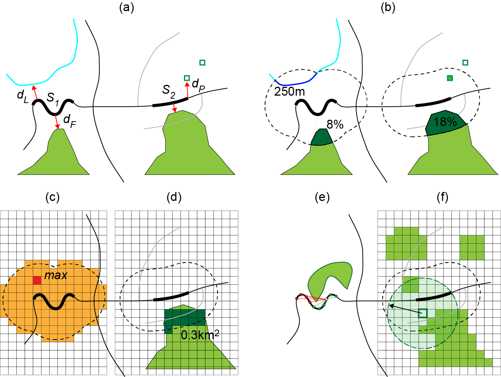
- Vektordaten
- Anzahl Quellen in der Nähe der Strasse
- Länge der Flüsse in der Nähe der Strasse
- Waldfläche in der Nähe der Strasse
- Rasterdaten
- Max. Lärmbelastung in der Nähe
- Anteil Wald (nun Raster)
- Leitstrukturen
- leiten Wild auf die Strasse hin
- Hydrologische Modellierung
- 2 Puffer-Modell
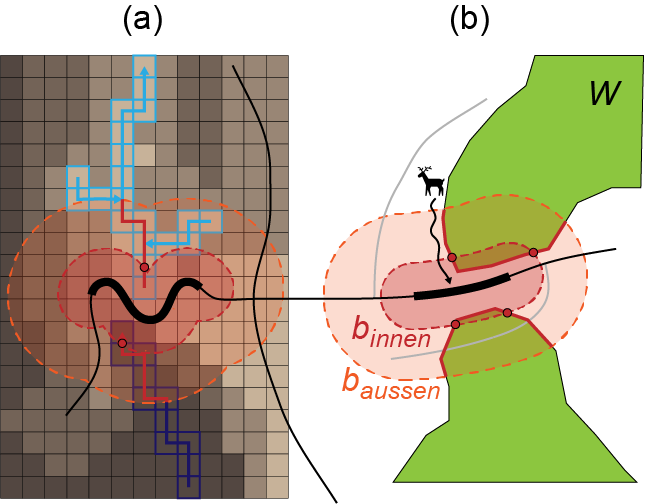
Zusammenfassung

Ein spatial join basiert auf der topologischen Beziehungcontainsund erlaubt dieAnnotation von Punkten mit räumlichen Attributen.
Topologische Beziehungen beschreiben die relativen räumlichen Beziehungen von Objekten zueinander, wobei von der Geometrie abstrahiertwird (z.B.contain/beinhalten, Punkt in Polygon).
Pufferoperationen erlauben die Erfassung von Nachbarschaftsbeziehungen von Punkten, Linien und Polygonen.
Methoden-Modul
MScUmwelt und NatürlicheRessourcen
Spatial Data Science 1
Screencast
Teil 3
Patrick Laube, Nils Ratnaweera & Nikos Bakogiannis
Geoinformatics Research Group
Institute of Natural Resource Sciences
ZHAW Zurich University of Applied Sciences Grüental, Postfach, CH-8820 Wädenswil
{laup, rata, bako}@zhaw.ch

Programm
“What is special about spatial?”
DasganzkleineGeodatenEinmaleins
RäumlicheAnnotation vonPunktdaten(Spatial Join)
NachbarschaftundNähe(Puffer)
Räumliche Aggregation (MAUP)
Aggregationsabhängigkeit
Oft mussmitaggregiertenDatengearbeitetwerden,z.B.ausDatenschutz-gründen,weildieDatennuraggregierterhobenwurden,ausGründenderVergleichbarkeitusw.
sog. Choroplethen-Karte (Flächenwertstufenkarte),ausχῶρος“Fläche/Region” and πλῆθος“Vielfaches”)
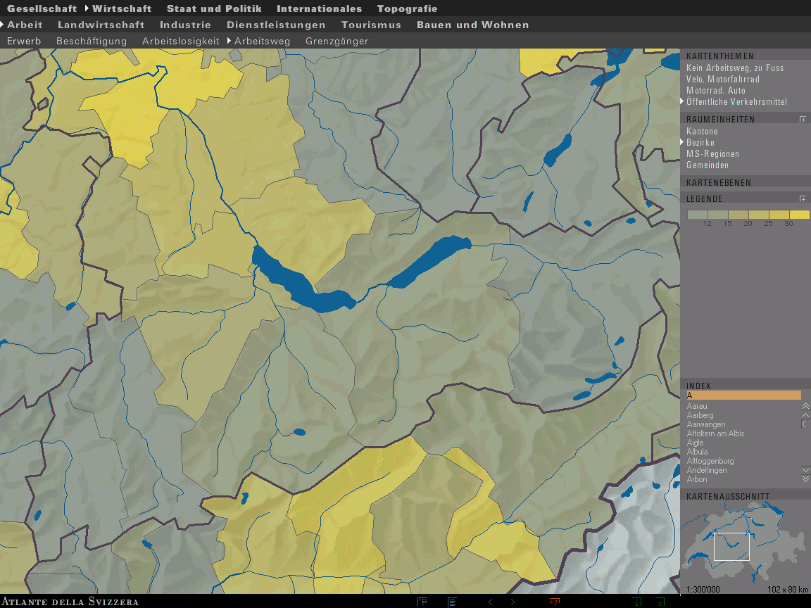
Quelle: Atlas derSchweizInteraktiv, Version 1.
Hierarchische Aggregation von Raumeinheiten
Prozent Nutzung ÖV – Niveau Kanton
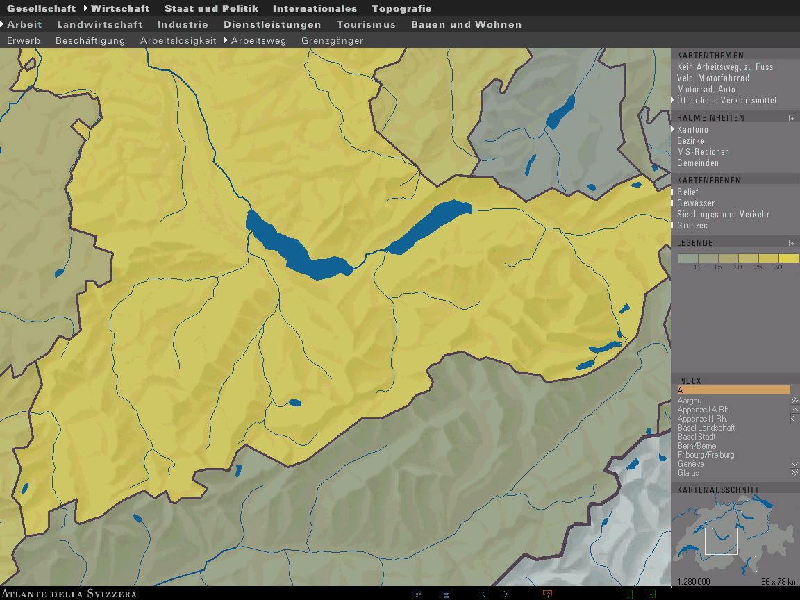
Quelle: Atlas derSchweizInteraktiv, Version 1.
Prozent Nutzung ÖV – Niveau Bezirk
Quelle: Atlas derSchweizInteraktiv, Version 1.
Prozent Nutzung ÖV – Niveau Gemeinde
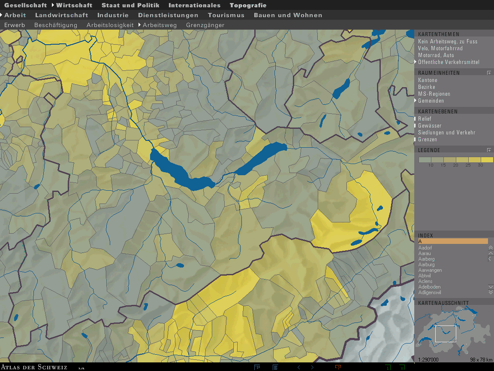
Quelle: Atlas derSchweizInteraktiv, Version 1.
MAUP: Ein spezifisch geographisches Phänomen
- Beobachtungen bei Untersuchungen mit aggregierten Daten:
- Je nach Wahl der Raumeinheit ergeben sich andere Werte für das/die untersuchte(n) Merkmal(e).
- Durch Veränderung der Raumeinheiten (d.h. durch verschiedenartige Aggregation) können teilweise sehr unterschiedliche Resultate entstehen.
- Beispiele (siehe folgende Folien):
- hierarchische Aggregation von Raumeinheiten: Gemeinden, Bezirke, Kantone
- Bildung verschiedener Grenzziehungen bei gegebener Zahl von Einheiten
- Fragen:
- Welches ist das ‘richtige’ Aggregationsniveau (= Massstab)?
- Welche Raumeinheiten sollen zusammengefasst werden?
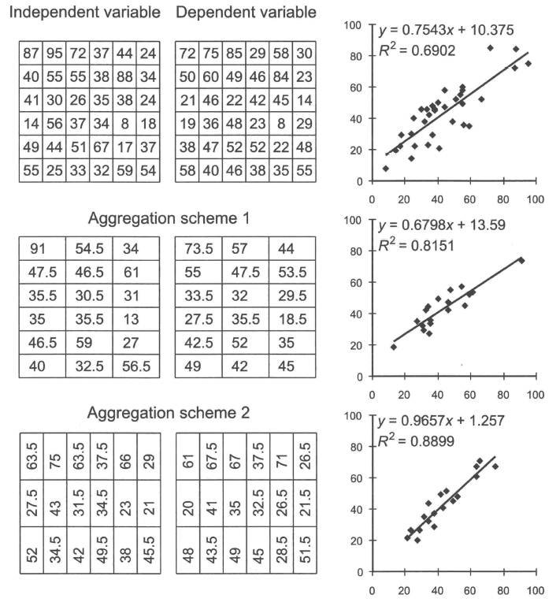
Quelle:O’SULLIVAN, D. and UNWIN, D.J. (2010): Geographic Information Analysis . Hoboken, NJ: Wiley,p. 36ff.
Kombinatorische Explosion bei Zonierung
DieZahlmöglicherGrenzziehun-gen (=Zonierungen)fürdie Aggregation vonRaumeinheitenexplodiertsehrschnell,wiedasnebenstehendeBeispielschonfürkleineZahlenzeigt.
EssindhiernureinigederMöglichkeitenderZonierunggezeigt.
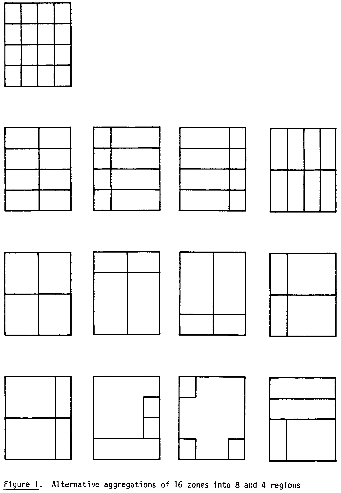
Quelle: The Modifiable Areal Unit Problem. CATMOG (Concepts and Techniques in Modern Geography), Vol. 38, Norwich: Geo Books.DerKlassikerzumThemaMAUP (40Seiten).
Weitere Beobachtungen
- Es gibt kein vorhersehbares Verhalten der Werte bei Aggregation und dadurch keine systematische Korrekturmöglichkeit. Beispiel Mittelwerte:
- sie können durch die Aggregation ansteigen
- sie können aber auch kleiner werden
- Würden die Raumeinheiten bei gleicher Zahl mit anderen Grenzziehungen anders gebildet, dann ergäben sich völlig unterschiedliche Werte.
- Dies kann sogar ausgenutzt werden (und wird in der Politik durchaus ausgenutzt), um manipulativ für eine Interessengruppe vorteilhafte Raumeinheiten zu bilden (engl. gerrymandering):
- Beispiel: Wahlbezirke ‘optimiert’ für die Regierungspartei (v.a. beliebt bei Mehrheitswahlrecht)
- Beispiel: Manipulation der Grenzziehung von Regionen in einer Weise, dass maximale Unterstützungsbeiträge fällig werden (Subventionen).
Fun Facts 1: gerrymandering
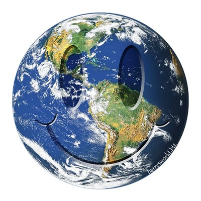
http://en.wikipedia.org/wiki/Gerrymandering
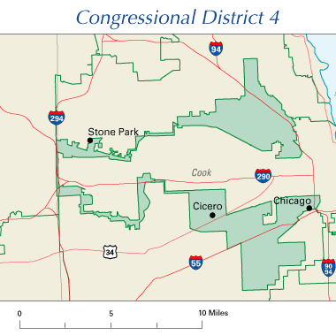
Quelle:http://en.wikipedia.org/wiki/File:Illinois_District_4_2004.png
{kind=link}
Fun Facts 2: How to lie with maps
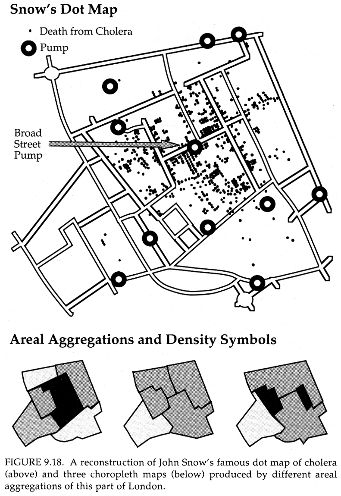
Oben: Dr. John Snow’s Karte des Cholera-Ausbruchs im Gebiet um die Broad Street in London, 1854. (Vorlesung 1)
Aufgrund der Häufungen der Cholerafälle (kleine Punkte) wurde die Wasserpumpe an der Broad Street als Quelle identifiziert.
Von den drei verschiedenen Aggregationen im unteren Bild gibt aber nur die erste diesen Sachverhalt wieder. Die anderen Aggregationen führen zu Fehlschlüssen.
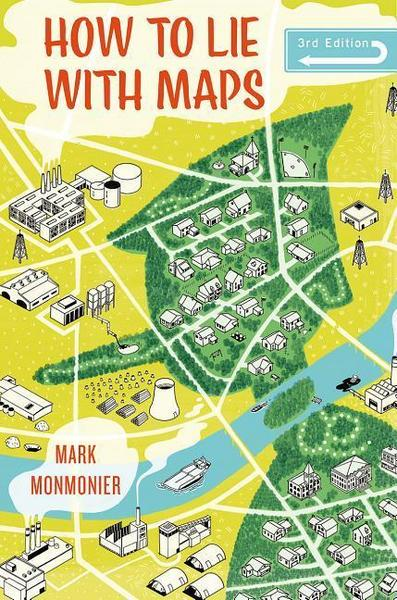
Quelle:Monmonier, M.S. (1991): How to Lie with Maps . Chicago: Chicago University Press.
https://anotherheader.files.wordpress.com/2017/03/dsc_2886-edit-edit.jpg?w=1024&h=683
{kind=link}
Übungen

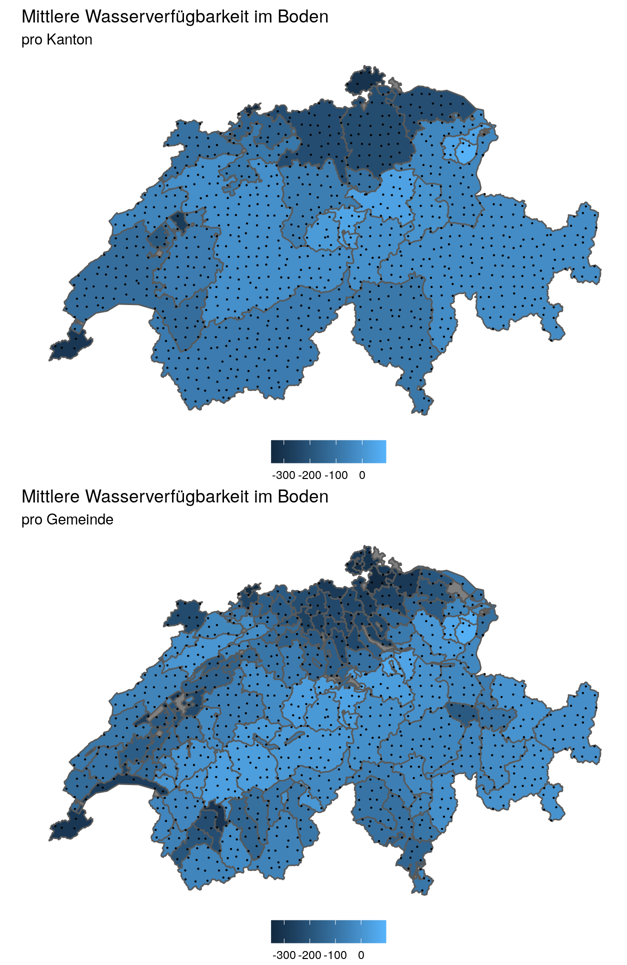
Choroplethenkartenaus Punktmessungen zur Wasserverfügbarkeit
MAUPKt.vs.Bez.
MAUP: Definition
- Heywood et al. (2006) definieren das Modifiable Areal Unit Problem (MAUP) wie folgt:
- Das MAUP besteht aus zwei Teilproblemen:
- Skalenproblem / Massstabsproblem : Raumeinheiten sind oft beliebig und aggregieren verortete Daten anders je nach Skala. — Welches ist die richtige Skala (Massstab) für die Untersuchung eines gegebenen Sachverhalts (Individuum, Haushalt, Gemeinde, Bezirk, Kanton, …) ?
- Aggregationsproblem : Es existieren viele mögliche Varianten der Zonenbildung (und damit der Aggregation) auf einer Skalenstufe. — Welches ist die richtige für die Untersuchung eines gegebenen Sachverhalts?
„A problem arising from the imposition of artificial units of spatial reporting on continuous geographic phenomena resulting in the generation of artificial spatial patterns.“ (p. 416)
Empfehlungen und Lösungsansätze
- DieMissachtung des Problems kann hingegen zu Fehlschlüssen und Scheinkorrelationen führen.
- Ansätze zur Lösung des Problems müssen zwingend die geographische Natur des untersuchten Phänomens einbeziehen.
- Zonierungen und aggregierte Daten nicht unbesehen übernehmen . Raumeinheiten hinterfragen: Entspricht die Skala und die Aggregation dem zu untersuchendenSachverhalt?
- Erhaltene Resultate bezüglich statistischer Fehler und Aussagekraft beurteilen, sowie alternative Zonierungen und Aggregationen generieren und vergleichen :
- Entstehen unterschiedliche Resultate ? Wiegrosssind diese Unterschiede und wo treten sie auf?
- Welche Zonierung/Aggregation liefert vom geographischen Standpunkt aus plausible Resultate?
Zusammenfassung
Das Modifiable Areal Unit Problem (MAUP) tritt auf, wenn künstliche Raumunterteilungen an sich kontinuierliche geographische Phänomeneaggregieren. DasMAUP kann zu Artefakten, Trugschlüssen und Fehlinterpretationen führen.
Zusätzliche Lektüre
O’SULLIVAN , D. and UNWIN, D.J. ( 2010) : Geographic Information Analysis . 2 nd Ed, Hoboken , NJ: Wiley. Kapitel 2 , p.33ff
Klassiker zur Vorlesung
Longley, P. A.,Goodchild, M. F.,Maguire, D.J.andRhind, D.W. (2005): Geographic Information Systems and Science . 2nd Edition. JohnWiley.
Monmonier, M.S. (1991): How to Lie with Maps . Chicago: Chicago University Press.Ein sehr lesenswertes und witziges Büchlein, das zeigt, wie man Karten nicht machen sollte.
Openshaw, S. (1984): TheModifiableAreal Unit Problem. CATMOG ( Concepts and Techniques in Modern Geography ) , Vol. 38 , Norwich:GeoBooks.Der Klassiker zum Thema MAUP (40 Seiten).
Tobler, W. R. (1970). AcomputermodelsimulationofurbangrowthintheDetroitregion. Economic Geography , 46 (2): 234-240.